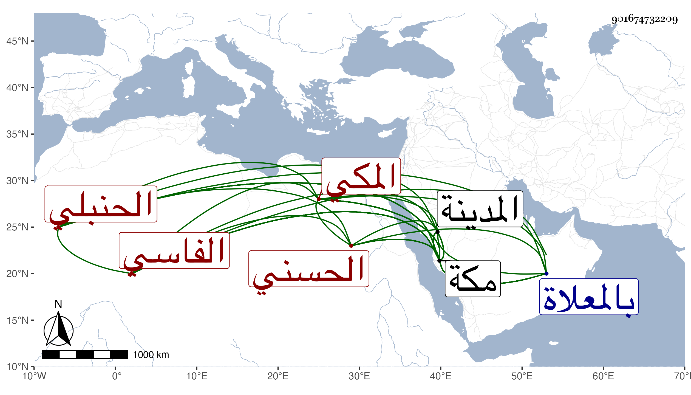

0902Sakhawi.DawLamic.ITO20230111-ara1.EIS1600.901674732209
Biography ID: 901674732209
923
عبد اللطيف بن محمد بن أحمد بن محمد بن محمد بن عبد الرحمن بن محمد ابن أحمد بن علي بن عبد الرحمن السراج أبو المكارم بن الولوي أبي الفتح بن أبي المكارم بن أبي عبد الله الحسني الفاسي الأصل المكي الحنبلي والد المحيوي عبد القادر الماضي ، وحفيد عم والد التقي الفاسي ، ولد في شعبان سنة تسع وسبعين وسبعمائة بمكة ونشأ بها فحفظ القرآن وتفقه وسمع من النشاوري والجمال الأميوطي وأبي العباس بن عبد المعطي والشهاب بن ظهيرة وأحمد بن حسن ابن الزين والفخر القاياتي وابن صديق والابناسي وابن الناصح في آخرين ، ومما سمعه على الأول البلدانيات للسلفي وجزء ابن بجيد ، وأجاز له البلقيني والتنوخي وابن الملقن وأبو الخير بن العلائي وأبو هريرة بن الذهبي وابن أبي المجد والعراقي والهيتمي وأحمد بن أقبرص والسويداوي والحلاوي وعبد الله بن خليل الحرستاني ومريم الأذرعية وخلق ، وخرج له التقي بن فهد مشيخة وكان أبوه مالكيا فتحول هو حنبليا وولي امامة مقام الحنابلة بمكة بعد موت ابن عمه النور علي ابن عبد اللطيف بن أحمد الآتي ، ثم قضاءها في سنة تسع فكان أول حنبلي ولي قضاء مكة ، واستمر فيه حتى مات مع كثرة أسفاره وغيبته عن مكة ، بل كان يستخلف هو من يختاره من أقربائه ، غير أنه عزل سنة ولكن لم يل فيها عوضه ثم أعيد وأضيف إليه في سنة سبع وأربعين مع قضائها المدينة النبوية فصار قاضي الحرمين ، وسافر إلى بلاد الشرق غير مرة واجتمع بالقان معين الدين شاه رخ بن تيمورلنك فيها وكان يكرمه غاية الاكرام ويسعفه بالعطايا والانعام ، لحسن اعتقاده فيه ومزيد محبته له ، واقتفى ولده الوغ بك وغيره من قضاة تلك بحيث سمعت وصفه بمزيد الكرم والاطعام من غير واحد من ثقات شيوخنا فمن دونهم ، ويقال إنه رجع من بعض سفراته بنحو عشرين ألف دينار فما استوفى سنته حتى أنفدها ، وكان شيخا خيرا دينا محمود السيرة في قضائه ، بعيدا عن الرشوة بل ربما كان لفرط كرمه يهب لمن يأتي إليه في محاكمة أو حاجة ، ساكنا منجمعا عن الناس ، متواضعا متوددا ذا شيبة نيرة ووقار ، ضخما محببا للخاصة والعامة مفيدا من أحوال ملوك الشرق ونحوهم ما امتاز على غيره فيه بمشاهدته مع نقص بضاعته حدث باليسير ، أجاز لي ، وتزوج بأخرة بابنة للعلاء حفيد الجلال البلقيني واستولدها ، لكن انقطع نسله منها وله حكاية في عبد العزيز بن علي بن عبد العزيز ، وذكره المقريزي في عقوده ، وقال : لم يزل سلفه فقهاء مالكية ، فلما أحدثوا بمكة قاض للحنفية وقاض للمالكية وصار بها ثلاثة قضاة أحب أن يكون رابع الثلاثة ، فقال أنا حنبلي ، وسعى في أن يكون بمكة ، مات بعد تعلله مدة بالاسهال ورمى الدم في ضحى يوم الاثنين سابع شوال سنة ثلاث وخمسين بمكة وصلى عليه بعد صلاة الظهر ودفن بالمعلاة رحمه الله وإيانا .
